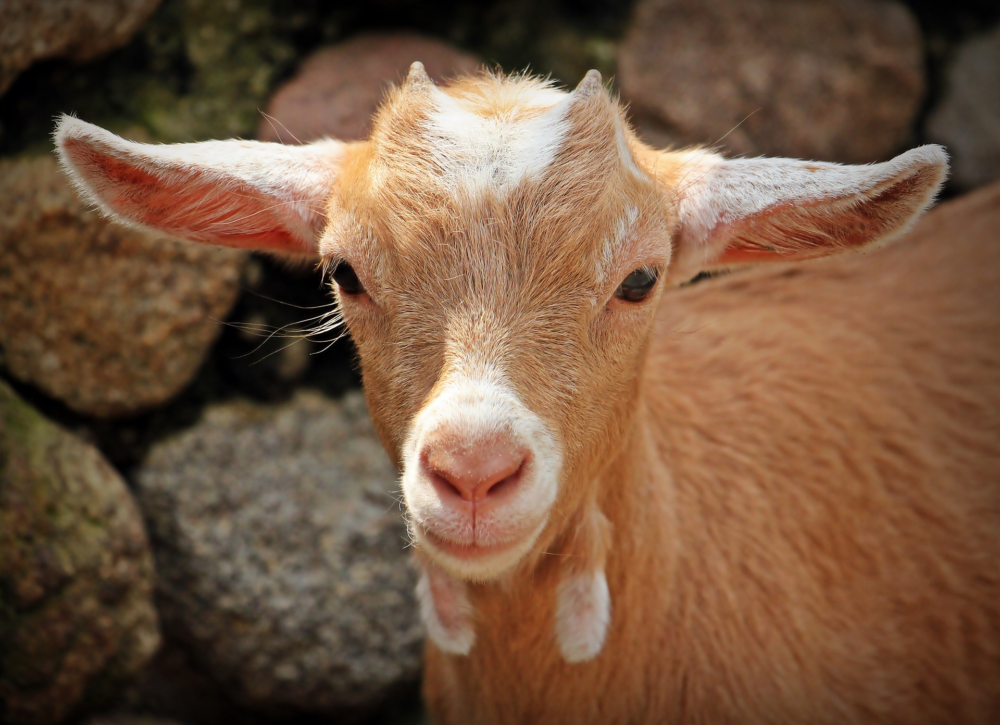

PUBLICO EN GENERAL üê∑
Los recorridos públicos se ofrecen los días Domingos. Hacemos un recorrido de 45
minutos, durante el cual los visitantes visitan cada granero y gallinero de la propiedad y tienen la
oportunidad de conocer a cada especie animal rescatada. Dirigidos por un guía capacitado, los visitantes
aprenden historias específicas de rescate de residentes y datos interesantes sobre la naturaleza de su
especie y la experiencia vivida en la industria agrícola.

MADRINAS Y PADRINOS üêÆ
Para las madrinas y los padrinos ofrecemos recorridos privados durante todo el año. Es
una visita verdaderamente especial e íntima con un guia capacitado y los fundadores del Santuario.
Durante un período de dos horas, vas a aprender todo lo que hay que saber sobre los residentes, cómo
comenzó el santuario e historias de rescate de primera mano. Una experiencia personal y cercana como
ninguna otra.

COMO LLEGAR üêì
Desde el centro de Rosario, podés llegar con las siguientes lineas de colectivo:
Expreso, 143 136 137 Rojo, 102 144 Negro y 146 Negro y Rojo. De fácil acceso para autos
particulares y taxis/remises.